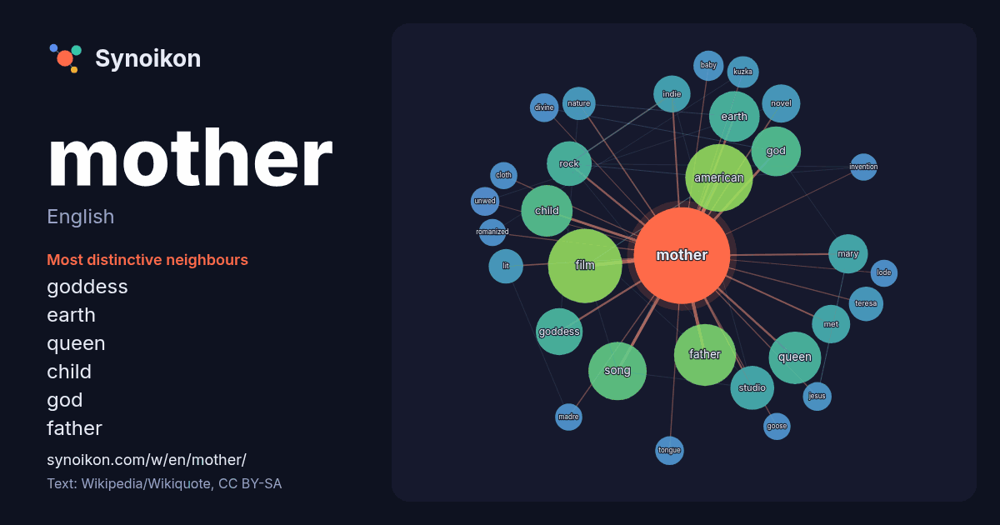

English · word of the day list
mother
The words found around it in 1531 instances from English Wikipedia, Wikiquote and Hacker News.

Most distinctive neighbours
- goddess 23×
- earth 20×
- queen 19×
- child 18×
- god 18×
- father 17×
- indie 15×
- teresa 13×
- lit 13×
- kuzka 12×
- studio 12×
- rock 11×
- mary 11×
- film 11×
- american 10×
- met 10×
- unwed 10.0×
- novel 9.8×
- tongue 9.5×
- divine 9.1×
× = how many times more often than in general English Wikipedia text.
Most frequent neighbours
- film 60
- american 50
- father 42
- song 37
- album 33
- queen 30
- child 29
- earth 28
- god 27
- goddess 24
- rock 22
- studio 21
- band 19
- single 19
- mary 17
- play 17
- church 16
- met 16
- novel 16
- released 16
In context
- A mother, mom, mum, mommy, or mummy is the female parent of a child. A woman may be considered a mother by virtue of having given birth, by raising a Wikipedia snippets · Mother
- A mother is a female parent. Mother may also refer to: "Mother" (short story), a 1907 short story by Wikipedia snippets · Mother (disambiguation)
- Mother! is a 2017 American psychological horror film written and directed by Darren Aronofsky. It stars Jennifer Lawrence, Javier Bardem, Ed Harris, Michelle Wikipedia snippets · Mother!
- Your Mother Your Mother Your Mother is a 2026 American action thriller film written and directed by Bassam Tariq which stars Mahershala Ali, John Cho, Wikipedia snippets · Your Mother Your Mother Your Mother
- Mother Mother is a Canadian indie rock band based on Quadra Island, British Columbia. The band consists of Ryan Guldemond on guitar and vocals, Molly Wikipedia snippets · Mother Mother
- bɔjaˈdʒi.u]; 26 August 1910 – 5 September 1997), better known as Mother Teresa or Saint Mother Teresa of Calcutta, was an Albanian-Indian Catholic nun, founder Wikipedia snippets · Mother Teresa
- Mother India is a 1957 Indian epic drama film, directed by Mehboob Khan and starring Nargis, Sunil Dutt, Rajendra Kumar and Raaj Kumar. A remake of Khan's Wikipedia snippets · Mother India
- Mother 3 is a 2006 role-playing video game developed by Brownie Brown and HAL Laboratory and published by Nintendo for the Game Boy Advance. It is the Wikipedia snippets · Mother 3
More English words
- art
- autumn
- bell
- bread
- bridge
- cat
- city
- climate
- clock
- death
- desert
- dog
- family
- food
- forest
- garden
- god
- gold
- health
- heart
- history
- honey
- horse
- island
- language
- life
- map
- mirror
- money
- mountain
- nature
- power
- rain
- road
- salt
- science
- shadow
- silence
- song
- star
- storm
- summer
- tea
- time
- train
- truth
- water
- winter
- work
Precomputed on 2026-10-09 with default settings (±5 words, medium corpus). The interactive map can refresh it with live data.